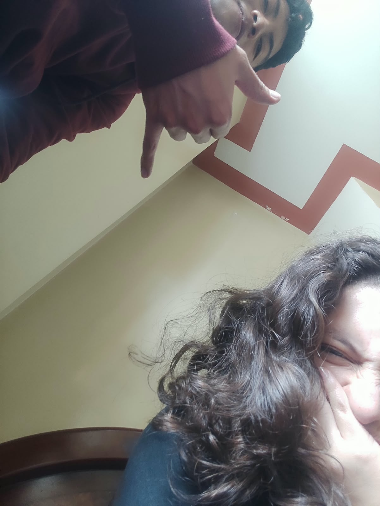
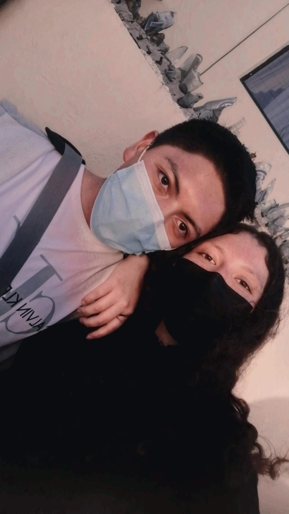

Historia clínica
Diana “La Clasista”
Toca para comenzar
Colegio · hace +8 años
Excelente primera impresión.
+8 años después… seguimos soportándonos ✓
Antecedente importante
Primera borrachera.
Tomé de más.
Y sí…
vomité.En el taxi de su mamá.
Perdón, señora.Mama Negra
y él mi primo.
Resultados

EVIDENCIAMuchas historias.
Pocas pruebas.
Fuera de joda…

Diagnóstico final
Clasismo incurable.
Gustos patrióticos sin tratamiento.
Feliz cumpleaños, Diana 💛
— Jordy